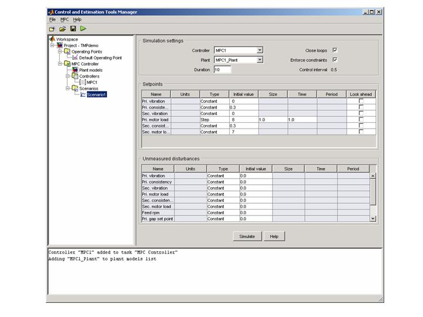
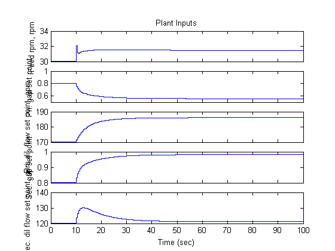
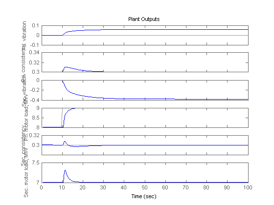
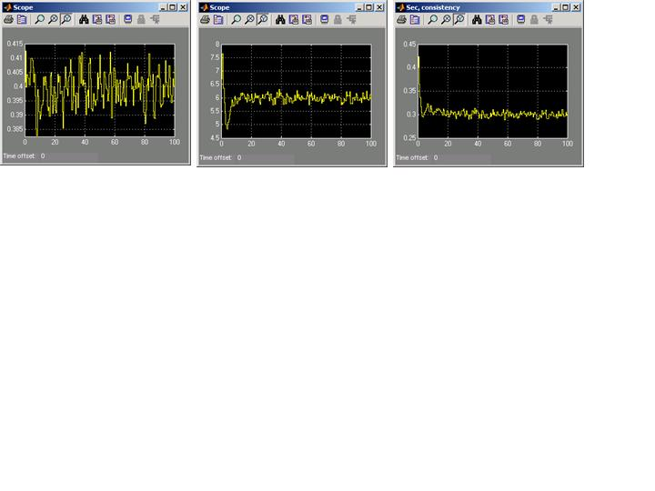

This demo illustrates control of a thermo-mechanical pulping (TMP) application using MPC.
The following diagram shows a typical process arrangement for a two stage TMP operation. Two pressured refiners operate in sequence to produce a mechanical pulp suitable for making newsprint. A primary objective of controlling the TMP plant is to regulate the energy applied to the pulp by the electric motors which drive each refiner to derive pulp with good physical properties without incurring excess energy costs. A secondary control objective is to regulate the ratio of dry mass flow rate to overall mass flow rate (known as consistency) measured at the outlet of each refiner. In practice these objectives amount to regulating the primary and secondary refiner motor loads and the primary and secondary refiner constancies subject to the following output constraints:
Manipulated variables comprise:
Physical limits are also imposed on each of these inputs.
The following Simulink model represents a TMP plant and an MPC Controller designed for the control objectives described above. The model can be opened with
open_system('tmpdemo')The MPC controller is represented by an MPC object in the workspace. It can be viewed at the command line as follows:
load MPCtmpdemo;
MPC1
MPC object (created on 30-Mar-2004 17:20:31):
---------------------------------------------
Sampling time: 0.5
Prediction Horizon: 20
Control Horizon: 5
Model:
Plant: [6x5 ss]
Noise: [6x6 ss]
Nominal: [1x1 struct]
Disturbance: []
Output disturbance model: user specified (type "getoutdist(MPC1)" for details)
Details on Plant model:
--------------
5 manipulated variables -->| 7 states |
| |--> 6 measured outputs
0 measured disturbances -->| 5 inputs |
| |--> 0 unmeasured outputs
0 unmeasured disturbances -->| 6 outputs |
--------------
Weights:
ManipulatedVariables: [0 0 0 0 0]
ManipulatedVariablesRate: [0.1000 10 0.1000 10 0.1000]
OutputVariables: [0 10 0 1 10 1]
ECR: 1000000
Constraints:
0 <= Feed rpm (rpm) <= 35, Feed rpm/rate (rpm) is unconstrained, -Inf <= Pri. vibration <= 1
0 <= Pri. gap set point <= 1, Pri. gap set point/rate is unconstrained, -Inf <= Pri. consistency <= 0.45
70 <= Pri. dil. flow set point (gpm) <= 250, Pri. dil. flow set point/rate (gpm) is unconstrained, -Inf <= Sec. vibration <= 1
Sec. gap set point/rate is unconstrained,
70 <= Sec. dil flow set point (gpm) <= 250, Sec. dil flow set point/rate (gpm) is unconstrained,
-Inf <= Sec. motor load (MW) <= 9
The controller was built by obtaining a linear plant model TMP model from the non-linear TMP Simulink using the MPC GUI (accessible from the "Design..." button on the MPC Controller mask) and then tuning the MPC controller from within the MPC GUI.
The controller design parameters can be viewed by opening the MPC GUI from the MPC mask by hitting the "Design..." button. The following window will open:

Controller weights can be viewed by selecting the controller node representing MPC1 and then selecting the "Weights" tab:
Constraints are chosen in the "Constraints" tab: The effect of design changes can be observed in the GUI by clicking on the "Scenarios" node to run a new Simulation scenario. The following shows the setup for Simulating a setpoint change on the primary refiner motor load from 8 to 9 MW without model mismatch. The results are displayed in separate figure windows:


The controller can be tested on the non-linear plant by running the simulation in Simulink. Any design changes made in the MPC GUI will automatically be tracked by the MPC mask, so there is no need to export the design back to the workspace. The output of the 3 scopes show the response to an initial set point of: Primary consistency 0.4, Primary motor load 8.5 MW, secondary consistency 0.3, and secondary motor load of 6 MW.
